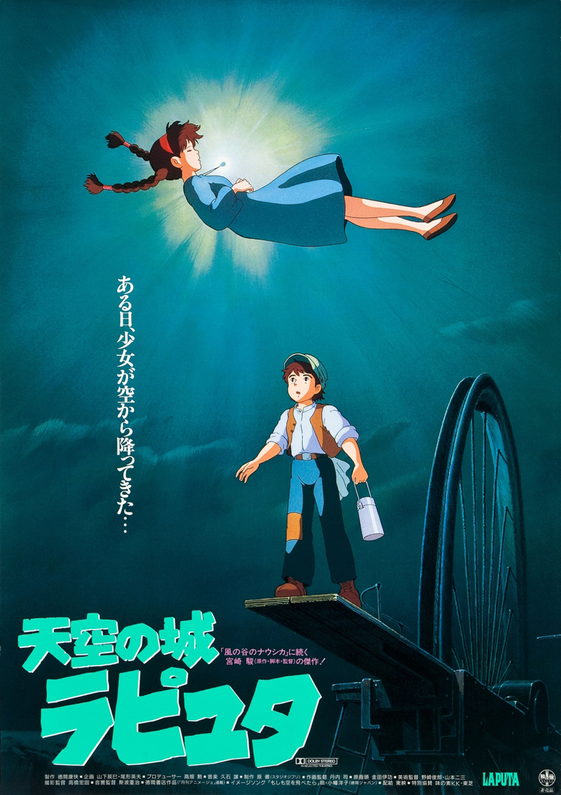

Castle in the Sky ( en japonés :天空の城ラピュタ, Hepburn : Tenkū no Shiro Rapyuta ) , titulada Laputa: Castle in the Sky para su estreno en el Reino Unido, Irlanda, Australia y Nueva Zelanda, es una película de aventuras animada japonesa de 1986 escrita y dirigida por Hayao Miyazaki . La primera película producida por Studio Ghibli , fue producida para Tokuma Shoten. Ambientada en una ficción de finales del siglo XIX, sigue las aventuras de un niño y una niña que intentan mantener un poderoso cristal del ejército, un grupo de agentes secretos y una familia de piratas, mientras buscan un legendario castillo flotante. La película fue distribuida por Toei Company .
La película ganó el Animage Anime Grand Prix en 1986. La película recibió críticas positivas y recaudó más de $ 16 millones en taquilla. Continuó recaudando un total de aproximadamente $ 157 millones en ventas de taquilla, videos domésticos y bandas sonoras , a partir de 2021 . En las encuestas japonesas que preguntaban sobre las mejores animaciones , fue votada como la segunda mejor película animada en el Festival de Artes de Medios de Japón de 2006 y fue votada como el primer lugar en una encuesta de audiencia de Oricon de 2008. Castle in the Sky ha tenido una fuerte influencia en la cultura popular japonesa., y ha inspirado numerosas películas, medios y juegos, en Japón e internacionalmente. Ha sido citado como un clásico influyente en los géneros steampunk y dieselpunk .
Castle in the Sky ha tenido un fuerte impacto en la cultura popular japonesa , con el "Efecto Laputa" comparable a "un monomito moderno para las películas y los medios de género japoneses". Jeff VanderMeer y SJ Chambers, en The Steampunk Bible , consideran la película como un hito en el género steampunk , llamándola "uno de los primeros clásicos steampunk modernos". Los elementos steampunk arquetípicos en Laputa incluyen aeronaves , piratas aéreos , robots a vapor y una visión de la energía a vapor como una fuente de energía ilimitada pero potencialmente peligrosa. Philip Boyes de Eurogamer también lo considera un trabajo influyente en elgénero dieselpunk .
Argumento :
Una aeronave que transporta a Sheeta, una niña huérfana secuestrada por el agente del gobierno Muska, es atacada por la capitana Dola y sus hijos piratas aéreos , en busca del colgante de cristal azul de Sheeta . Intentando escapar, Sheeta cae de la aeronave pero, gracias al amuleto, flota hacia la tierra, inconsciente. Un niño huérfano llamado Pazu la atrapa y la lleva a su casa en un pueblo minero. Pazu le muestra una foto de una legendaria ciudad flotante, Laputa , tomada por su difunto padre. Cuando los piratas de Dola y los hombres de Muska aparecen y los persiguen, Pazu y Sheeta, ayudados por el amuleto, caen en una mina abandonada, donde ella cuenta cómo fue secuestrada de su casa en la montaña debido a su collar. El viejo minero Tío Pom les muestra los depósitos brillantes de Aetherium a su alrededor.
Al salir de la mina, Sheeta le dice a Pazu su nombre completo, Lucita Toel Ul Laputa, y la revela como descendiente de la familia real de Laputan. Muska los captura y los lleva a su fortaleza donde los niños están encarcelados en diferentes habitaciones. Muska le muestra a Sheeta un robot Laputan roto ; sabiendo su nombre, tiene la intención de hacerla revelar la ubicación de Laputa. Muska amenaza a Pazu; por su propia seguridad, Sheeta le ordena que se vaya. Pazu, abatido, regresa a casa, donde lo esperan Dola y sus hijos. Para rescatar a Sheeta, Pazu se une a ellos.